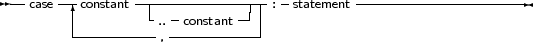

Free Pascal supports the case statement. Its syntax diagram is
_________________________________________________________________________________________________________Case statement

___________________________________________________________________
The constants appearing in the various case parts must be known at compile-time, and can be of the following types : enumeration types, Ordinal types (except boolean), and chars. The case expression must be also of this type, or a compiler error will occur. All case constants must have the same type.
The compiler will evaluate the case expression. If one of the case constants’ value matches the value of the expression, the statement that follows this constant is executed. After that, the program continues after the final end.
If none of the case constants match the expression value, the statement list after the else or otherwise keyword is executed. This can be an empty statement list. If no else part is present, and no case constant matches the expression value, program flow continues after the final end.
The case statements can be compound statements (i.e. a Begin..End block).
Remark: Contrary to Turbo Pascal, duplicate case labels are not allowed in Free Pascal, so the following code will generate an error when compiling:
Var i : integer;
... Case i of 3 : DoSomething; 1..5 : DoSomethingElse; end; |
The compiler will generate a Duplicate case label error when compiling this, because the 3 also appears (implicitly) in the range 1..5. This is similar to Delphi syntax.
The following are valid case statements:
Case C of
’a’ : WriteLn (’A pressed’); ’b’ : WriteLn (’B pressed’); ’c’ : WriteLn (’C pressed’); else WriteLn (’unknown letter pressed : ’,C); end; |
Or
Case C of
’a’,’e’,’i’,’o’,’u’ : WriteLn (’vowel pressed’); ’y’ : WriteLn (’This one depends on the language’); else WriteLn (’Consonant pressed’); end; |
Case Number of
1..10 : WriteLn (’Small number’); 11..100 : WriteLn (’Normal, medium number’); else WriteLn (’HUGE number’); end; |